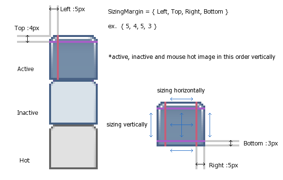

The software is provided "AS-IS" without warranties of any kind.
System Requirements
Windows XP, Vista -
Microsoft .NET framework 2.0 or later
( if you use Vista, no need to install framework. )
Installation
1) Extract zip file and execute 'RegisterQTTabBar.exe' at the folder which contains 'QTTabBar.dll', 'Interop.SHDocVw.dll' and 'Interop.Shell32.dll'.
*Required to have more than Power User authority to install.
*You can do the same even if you have an older version installed.
*When you failed to install...
On XP, make sure Microsoft .NET framework 2.0 or 3.0 is properly installed on your machine.
You can get Microsoft .NET framework 3.0 from Windows Update or download from here( www.microsoft.com ) and install.
2) After relogon to Windows, open explorer, and right click on toolbar. Check 'QT TabBar'. 'QT Tab Standard Buttons' if you like.
First time you'll see an empty tab. Close explorer window once, and from next time QTTabBar will work properly.
*On Vista...
Click 'Organize' - 'Layout' - check 'Menu bar' to show menu bar of explorer.
After enabled QT TabBar, you can show or hide the menu bar by pressing Alt + M.
3) To use 'QT Tab Desktop Tool'
Right click on Task bar, check 'QT Tab Desktop Tool' in 'Toolbar' menu.
Launcher menu will be shown when double-clicked on Desktop and Taskbar.
Uninstallation
1) Execute RegisterQTTabBar.exe at the folder which contains 'QTTabBar.dll', 'Interop.SHDocVw.dll', 'Interop.Shell32.dll'.
2) If you used Memo for folder, also delete directory:
XP
C:\Documents and Settings\%username%\Application Data\Quizo
Vista
C:\Users\%username%\AppData\Roaming\Quizo
3) Delete files and folders.
Installing / Uninstalling manually
Installing
1) Register these 3 dll files to GAC. ( Drop files to "C:\WINDOWS\assembly" )
QTTabBar.dll, Interop.SHDocVw.dll, Interop.Shell32.dll
2) Register QTTabBar.dll to registry.
Execute:
C:\WINDOWS\Microsoft.NET\Framework\(2.0 version )\regasm.exe QTTabBar.dll
3) log off.
Uninstalling
1) Remove QTTabBar entry from registry.
Execute:
C:\WINDOWS\Microsoft.NET\Framework\(2.0 version)\regasm.exe /u QTTabBar.dll
2) Delete from GAC. Change directory to "C:\WINDOWS\assembly", select these 3 objects and press delete key.
QTTabBar, Interop.SHDocVw, Interop.Shell32 ( also "QTTabBar.resources" if exists )
(public key token: 78a0cde69b47ca25)
Containts of zip file
Main files
QTTabBar.dll
Interop.SHDocVw.dll
Interop.Shell32.dll
Installer
RegisterQTTabBar.exe
shortcut key editor
QTShortcutKeyEditor.exe
Tools
Manual
Manual.html
Images
Navigation buttons
On XP, explorer navigation buttons are not available. They navigate to unexpected folder.
Please use navigation button of QTTabBar/QT ButtonBar or press Alt + Left/Right.
On Vista, explorer navigation buttons work normally.
Open new tab
Drop folders onto tab bar.
Middle click on folder icon (option).
Double left click / Enter key with Shift key down.
Click navigation menu item with Shift key down.
Double left click / Enter key with Control + Shift keys down, then tab opens without activating.
Open multiple tabs at once
Registering
Right click on a tab to register as a new group -> 'Create new Group'
You can add to existing Group.
Open group
Right click on bar margin to open drop down menu -> 'Groups'
or click button on ButtonBar.
If you right-click on a Group item, submenu will be shown that contains sub items in the group.
To delete or edit groups, 'Option' -> 'Groups'.
Double left click / Enter key with Control + Shift + Alt keys down, all subfolders within selected folders open as tab.
Open new window
Drop folders onto tab bar with Control key down.
Middle click on folder icon with Control key down (option).
Double left click / Enter key with Control key down.
Click navigation menu item with Control key down.
Close tabs
Middle click on a tab.
Lock tab
Left click on a tab with Control key down.
Start UP Group
To register a group as Start Up Group, click the menu item of Group Menu with Control + Shift keys down.
Adding applications to launcher menu
Drop files to tab bar to add applications to menu.
for more detail option, open 'Option' window -> Applications tab.
| Name | display name on menu |
| Path | target file/folder path.
separator if empty |
| Arguments | arguments to execute. |
%c% replaced by current folder path.
%s% ... selected files and folders in current folder.
%f% ... selected files in current folder.(only arguments)
%d% ... selected folders in current folder.
|
| Working folder | working folder application uses.
|
ex: open command prompt at current folder or at selected folder if a folder is selected.
| Name | Path | Arguments | Working folder |
| CMD | c:\windows\system32\cmd.exe | (empty) | %c%%d% |
Key shortcuts (default)
You can edit by QTShortcutKeyEditor.exe
| Ctrl + Tab | select next tab |
| Ctrl + Shift + Tab | select previous tab |
| Ctrl + Num0 - Num9 | select a tab directly |
| Ctrl + W | close current tab |
| Ctrl + Shift + W | close all but current and locked |
| Ctrl + Shift + Z | restore a tab |
| Ctrl + O | open dialog for folder |
| Ctrl + L | lock/unlock current tab |
| Ctrl + Shift + L | lock/unlock all tabs |
| Ctrl + N | clone current tab |
| Alt + Left/Right | go back/forward |
| Alt + Ctrl + Left/Right | go back to the start/forward to the end |
| Alt + F4 | close window |
| Alt + , | show applicaton menu |
| Alt + . | show current tab menu |
| Alt + M | show/hide menu bar (Vista) |
ToolBar Buttons Image
right click on ToolBar Buttons -> 'Customize...'
specify 432 x 40 size image file (PNG, GIF, BMP).
24 x 24 large buttons from ( 0, 0 ) to ( 431, 23 )
16 x 16 small buttons from ( 0, 24 ) to ( 287, 39 )
in case of bmp file, magenta (RGB = 255:0:255 ) is tranceparent color.
Sample
Tab Skin Image
Specify image file and its SizingMargins in Option window -> Appearance tab.

Other extra toys
*Folder memo
you can write a simple memo for each folder.
color, font size ( Ctrl + "+" / "-" )
simple search by Ctrl + F.
*Simple password for folder
very simple password lock for folders.
it becomes harder to access the folder including sub-directories.
1.0.15 (2007/4/16)
+Alternate row color in details view
+Preview tooltip for image and text file
+"Subfolder tip" ( show menu on icon )
+option to specify history max size
+option to save window transparency
*fixed: icon position on tab
*fixed: timeout of OpenGroup.exe
*fixed: behavior of 'open new window', including Ctrl + double-click
*fixed: Group editor in Options window
*fixed: and several bugs...
1.0.14 (2007/3/14)
+MD5 computing in another thread and progress bar
+Option added: Select file name without extension when renaming files (XP)
*fixed: duplicating branche menues in history
*fixed: following functions didn't work in environment using 'Windows classic folders' in Folder Options (XP)
- middle clicking on folder to open new tab
- double clicking on folder empty area to go up one level
- search box
- grid line
- tab preview
- file launching history
and more maybe
1.0.13.1 ( 2007-3-5 )
*fixed: space key in search box
*fixed: OpenGroup.exe
1.0.13 ( 2007-3-4 )
+Start Up Group. Register/unregister by clicking group item with Control + Shift keys down
+Simple search box in ButtonBar
*fixed: tab icon won't change untill mouse hover (XP, thx Phil)
*fixed: problem with virtual folders such as Desktop, MyDocuments, Users
*fixed: tabs duplicated when special folder opened from desktop tool
*fixed: window vanishes away occasionally (Vista)
*fixed: search button on ButtonBar didn't work
*fixed: and other several bugs...
1.0.12.0 ( 2007-2-16 )
+ shortcut key editor available
+ MD5 hash checker
+ option to draw folder icon on tab
*fixed: a bug which steals and holds key focus after drop down menu clicked (Vista)
*fixed: backSpace key and tab synchronization (Vista)
*fixed: several bugs
1.0.11.0 ( 2007-2-3 )
+ (Vista) option to hide menu bar.
+ (Vista) option to change background color.
* fixed: activating problem under not English environment.
* fixed: navigation buttons on Vista.
..............
0.9.0.0 (2006-3-6) β1
0.0.0.0 (2006-3-3) dev start
Any comments, questions or bug reports are welcome.
This software uses
BandObjectLib.
Sincere thanks to the author of BandObjectLib, Pavel Zolnikov.
Quizo